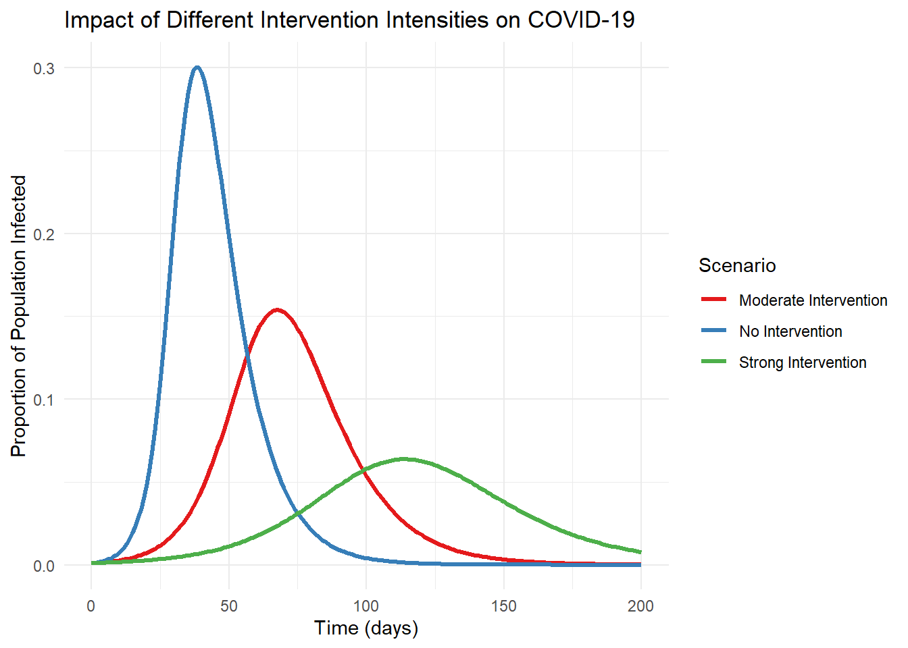

Warning: package 'DiagrammeR' was built under R version 4.3.3Simple visualization of the model validation cycle
Jong-Hoon Kim
April 18, 2023
As infectious disease modelers, we face a fundamental epistemological question: How can abstract mathematical constructs help us understand and predict the complex dynamics of disease transmission in the real world? This question lies at the intersection of epidemiology, mathematics, and philosophy of science.
Drawing from the Stanford Encyclopedia of Philosophy’s entry on scientific models (Frigg and Hartmann 2020), I’d like to explore how we connect our mathematical representations to reality, particularly in the context of infectious disease modeling.
Philosophers describe our relationship with models as a process of “surrogate reasoning” or “model-based reasoning.” Through building, manipulating, applying, and evaluating models, we can make inferences about reality without directly experimenting on it—an especially crucial approach when dealing with infectious diseases.
This reasoning process can be divided into two phases:
When building a model, we learn how different components interact mathematically. For instance, in an SIR model, we define relationships between susceptible, infected, and recovered populations (Anderson and May 1991). Through manipulation—changing parameters, running simulations, and analyzing outputs—we develop intuition about the system’s behavior under different conditions.
But the critical challenge remains: How do we translate knowledge gained from manipulating abstract equations to meaningful insights about actual disease transmission?
For a model to be useful, it must represent relevant aspects of reality. If we’re interested in how vaccination might reduce infection rates, our model must incorporate mechanisms that capture both vaccination dynamics and disease transmission accurately.
Yet how can we be sure our mathematical representations adequately reflect reality? This is where empirical validation becomes essential. We compare model predictions against observed data—testing whether our models actually predict what happens in outbreaks. When discrepancies arise, we refine our models, creating an iterative cycle of improvement.
Warning: package 'DiagrammeR' was built under R version 4.3.3Simple visualization of the model validation cycle
It’s important to recognize that all models are simplifications. As statistician George Box famously noted, “All models are wrong, but some are useful” (Box 1987). The value of a model isn’t in its perfect replication of reality but in its ability to provide useful insights despite its limitations.
In infectious disease modeling, we often make simplifying assumptions—homogeneous mixing of populations, identical susceptibility across age groups, or simplified immune responses. These assumptions make the mathematics tractable but create distance from biological reality.
The COVID-19 pandemic provided a dramatic illustration of both the power and limitations of epidemiological modeling. Early models helped forecast hospital capacity needs and evaluate potential intervention strategies (Adam 2020; Ferguson et al. 2020). However, they also demonstrated how sensitive predictions can be to underlying assumptions about transmission rates, asymptomatic spread, and behavioral responses (Ioannidis, Cripps, and Tanner 2020).
When models failed to accurately predict outcomes, this wasn’t necessarily a failure of modeling itself but often reflected limitations in our understanding of the virus or changes in human behavior that models couldn’t anticipate (Holmdahl and Buckee 2020). Each discrepancy became an opportunity to refine both our models and our understanding of disease dynamics.

How can we strengthen the connection between our models and reality? Several approaches are crucial:
As infectious disease modelers, we navigate a fascinating epistemological landscape. Our models serve as cognitive tools that allow us to explore complex dynamics in ways that would be impossible through direct observation alone. They help us generate hypotheses, evaluate potential interventions, and develop intuition about non-linear systems.
While the gap between model and reality can never be completely closed, the iterative process of building, testing, and refining models brings us progressively closer to useful representations of disease transmission. The philosophical challenge of connecting abstract mathematical structures to biological reality remains at the heart of our discipline—a challenge that makes epidemiological modeling both intellectually stimulating and practically valuable for public health.